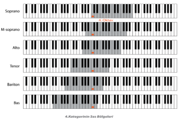

اللهم صل على سيدنا محمد الكامل الأكمل، ومظهر الجمال الأجمل، المكمل لكل كامل على مدى الأزمان، والمتخلق على التمام بأخلاق الرحمن؛ القائل بلسان الشكر: أنا سيد وُلد آدم ولا فخر؛ وعلى آله الطاهرين بالتطهير الرباني، وصحابته المشرفين بالشهود العياني؛ وسلم من أثر شهود نفوسنا صلاتنا عليه تسليما. والحمد لله المنعم المفضل حمدا عميما.


 |


2022/09/03
الغناء العربي
الغناء هو صنف من العزف، لكن على الأوتار الصوتية التي زين بها الله عباده؛ في الوقت الذي تقوم به تجاويف الفم والأنف والوجنتين بمهمة الصندوق الرنان الذي يكون للآلات الوترية كالقيثار والعود وغيرهما... وإن بعض المفسرين يذهبون في قول الله تعالى: {يَزِيدُ فِي الْخَلْقِ مَا يَشَاءُ} [فاطر: 1]، إلى أن المزيد هو حسن الصوت. ورغم أننا لا نجد من ظاهر الآية ما يقيد معنى الزيادة، إلا أننا نجد حسن الصوت من غير شك يدخل ضمنها. ولا شك أن تفسير الزيادة بحسن الصوت، هو ملحظ جدير بالعناية، ويدل على حسن الفهم من المفسر. وإن الغالب على الغناء العربي، أنه لا يُدرس؛ كما يُدرس الغناء الأوبرالي. وبهذا نجد المغنين العرب يعتمدون على حسن صوت المغني، ومن بعد ذلك على تدرجه في تقليد من سبقه من كبار المغنين، إلى أن يصل إلى ضبط التحكم في صوته، وبعد أن يهتدي إلى طبقته ومعرفة الأنغام والدرجات التي تكون في متناوله، ولو بمجرد الإحساس. والحديث عن الطبقات الصوتية يجرنا إلى ذكر أشهرها، بحسب المتعارف عليه عالميا، قبل أن نواصل الكلام. وهذا رسم توضيحي لترتيب الثمانيات (مجموع ثمان درجات) ومحل وجود كل طبقة غنائية منها:  1. الطبقات الصوتية الأصلية: ا. السوبرانو: وهو أحدّ صوت للنساء. وله خمس فئات فرعية، بحسب القوة والعمق والخامة. ونعني بالخامة، ما يُصطلح عليه في علم الموسيقى بالجَرْس (stamp) والقماشة الصوتية؛ وإن كانت مسألة التفريق بين هذه المعايير مما قد يُختلف عليه بين المتخصصين. ولا بد من أن نفرق في الغناء بين ما يخرج من الصدر (وقد يُستعمل فيه البطن من جهة التقنيات)، وبين ما يخرج من الرأس. وفي الغناء الأوبرالي يُستعمل صوت الصدر من قِبل القادرين عليه، ومن يُجيدونه بعد التداريب الصوتية (vocalize)؛ وهو عمل شاق مضن، لمن جربه. أما صوت الرأس في الأوبرا، فيُستعمل عند التقليل من قوة الصدح، أو عندما يعجز الصوت عن بلوغ الدرجات العليا، وذلك عندما يُلجأ إلى الصوت الزائف (falsetto). وأما في الغناء العربي، فيُعتمد صوت الرأس دون صوت الصدر؛ ولا يَلجأ إلى الصوت الزائف، إلا قلة من المحترفين المتقنين. وأما العامة من الملحنين ومن المغنين، فلا يعرفون تقنيات التصرف بالأصوات، ويحصرون معاملاتهم فيما يسهل عليهم، دون ما يصعب، ومن غير علم حقيقي. ومما يُجهل في البيئة العربية، صلاحية الصوت للغناء وعدمها. وقد يستمر عندنا من كان صوته حسنا في شبابه إلى شيخوخته، من دون أن يتغير شيء عند المستمعين؛ إما بسبب اتساع شهرته، وإما لأسباب مالية بحت، كما هو الشأن في زماننا. وسنذكر بعض ملاحظاتنا بخصوص أشهر الأصوات العربية فيما بعد إن شاء الله؛ حتى يتبيّن القارئ بعض ما أشرنا إليه. 2. الخامة الصوتية: وهي ما يجعلنا نفرق في الغناء العربي بين الصوت المطرب، والصوت المؤدي (الغناء العام). وهذا يجعل الغناء العربي مستندا إلى معايير مخصوصة، وإن كنا نرى أنها لم تدخل مجال التنظير العلمي بعد. والصوت المطرب، يعتمد على خِلقة الإنسان الصوتية، التي لا دخل له فيها. فهي إما أن توجد لدى المغني أو ألا توجد؛ وهي ما يُسميه عوام الموسيقيين الموهبة. وسندل على نماذج من أكبر الخامات العربية فيما بعد أيضا. وإن نحن نظرنا إلى جل المغنين، فإننا سنجدهم من فئة المؤدين لا من فئة المطربين، رغم أن العامة لا يُميّزون في الغالب، وربما قد يرفعون المؤدي على المطرب لسبب من الأسباب. وقد يكون المؤدي دارسا للغناء متدربا عليه، فيزيد ذلك من مقدرته، ويوهم بأنه من فئة غير فئته. وهذا الصنف من الأصوات نسميه نحن الصوت الذكي، في مقابل الصوت الغبي، الذي يكون لمن له خامة جيدة، ويقلل من قيمتها بعدم الدراسة والتدريب. ولولا أن يكون ذلك طعنا في شخصية بعض المغنين، لذكرنا نماذج من الأصوات الذكية ومن الأصوات الغبية، للدلالة على ما نقصده بكلامنا... 3. مدة صلاحية الصوت: إن الصوت ينمو كما ينمو سائر الجسم، ويشيخ كما يشيخ الجسم؛ وهذا لأن الأوتار الصوتية من الجسم نفسه. لذلك لا يُحكَم على صوت الطفل، وإن وُظِّف مرحليا في الغناء، إن كان ذا خامة جيدة، وإن كان يُتقن إبراز الدرجات. وفي العادة يخضع المغنون العالميون لرقابة شديدة من قِبل النُّقاد المتخصصين، فإذا بلغ من السنّ ما يُخل بقدراته، تجد صاحبه يختار الاعتزال. وإذا لم يقرر الاعتزال، فإن شركات الإنتاج لن تقبل التعامل معه... أما في مجتمعنا العربي، فإن المغني قد يستمر مستندا إلى تاريخه، مع ظهور الضعف في صوته. وسنذكر هنا نموذجيْن، نكتفي بهما للدلالة على الأمر، وهما: أم كلثوم، ومحمد عبد الوهاب. وهما من أفضل الأصوات خامة ومقدرة على الغناء السليم؛ مع الإطراب بدرجة ممتازة... وهما معا مولودان حوالي 1900م. وهذا يعني أن ذروة عطائهما ستكون سن الشباب، أي من حوالي 1930م، إلى حوالي 1950م. ومن هنا سنعلم أن غناء محمد عبد الوهاب الذي استمر إلى حفلة "كل دا كان ليه؟" (1954م) ، كان بالفعل آخر مدى يصل إليه. وهذا يدل على خبرة عبد الوهاب الكبيرة، وعلى وعيه بمقدرته، وعلى حسّه السياسي في تدبير صوته، بحيث لا يسمح لنفسه بالغناء عندما تتخلف عنه الإجادة. بل إن صوت عبد الوهاب -مع تمكنه الكبير- كان قد فقد رونقه قبل 1954م بمدة؛ حتى إن غناءه في الأستوديو لمثل "قل لي عملك إيه قلبي؟" (1957م)، و"فين طريقك فين؟" (1958م)، كان قد بدأ يفقد فيه جودته بسبب ارتخاء حباله الصوتية. وهذا هو ما جعله يقتصر على التلحين وحده فيما بعد. وأما أم كلثوم، فإنها أصرت على الاستمرار في الغناء من بداية القرن العشرين إلى بداية السبعينيات منه، وقبل وفاتها في 1975م بثلاث سنوات. وكل من له خبرة بالأصوات، فإنه يعلم أن أم كلثوم كانت تعتمد على خامتها النفيسة وحدها، رغم التغيُّرات. فهي كانت تعاني من ارتخاء الحبال، مما كان يدفع بالملحنين إلى إنزال "الدوزان" (ضبط الأوتار) مسافة صوتية ونصفا. وقد وقع معها محمد الموجي في مأزق، حينما لم تتمكن من بلوغ درجات الجواب في أحد ألحانه، لولا أن عبد الوهاب تدخل ونصح بخفض الدوزان. وخفض الدوزان، هو تصوير للمقامات في الحقيقة، يحتال فيه العازفون بإرخاء أوتار آلاتهم؛ وإلا فإنه كان يُطلب منهم الإبقاء على الدوزان الأصلي، مع تحقيق التصوير، إذا كان العازفون متقنين. وهذا التصوير العزفي، يتطلب دراسة من العازف للأوضاع العزفية المختلفة (positions). فمثلا إن كان اللحن على نغم النهاود من درجة الراست (دو)، فإنه يصبح نهاوند على العشيران (لا)، أو قد يُلجأ فيه إلى نهاوند اليكاه (الصول)، للتشابه الحاصل في طريقة العزف على بعض الآلات الوترية. ولقد فسد صوت أم كلثوم أيضا بتضييعها لبعض مخارج الحروف بسبب طقم الأسنان الاصطناعية، كحرف السين والتاء والزاي، زيادة على نطقها للحروف العربية بالطريقة التركية، كما هو شأن غالبية المصريين والشاميين. ولو أن أم كلثوم كانت بذكاء عبد الوهاب، لتوقفت عن الغناء، قبل أن تظهر كل هذه العيوب في صوتها... 4. نماذج من الأصوات العربية: ا. النماذج الرجالية: محمد عبد الوهاب: وكان في شبابه من طبقة التينور الجميلة جدا، وقد ساد مجال الغناء الرجالي، حتى عاد لا يُجارى. وغناؤه في مدة شبابه، هو الغناء المعتبر وحده، كما ذكرنا. وقد كانت تغلب على عبد الوهاب طريقة الإنشاد الديني وتجويد القرآن، كما غلبت على كثيرين غيره؛ وهو كان يغني بطريقتيْن متداخلتيْن: التعبيرية والإطرابية. ويظهر تعبير عبد الوهاب في غنائه لنوع التانغو والنوع الأندلسي الإسباني. فريد الأطرش: خامته جيدة، ومسافته الغنائية واسعة، تمتد إلى درجات عليا في الجوابات؛ لكنه لم يكن صالحا للغناء إلا في شبابه. وهو قد أبدع في الغناء المتغرب أكثر من الغناء الشرقي؛ وذلك لأنه في الغناء الشرقي لم يكد يعدو الغناء الشعبي. وهذا يعني أنه لم يكن يُحسن تلحين القصائد الفصيحة... رياض السنباطي: كان ضعيف الخامة، لذلك فقد أدرك أن عليه ألا يستمر في الغناء؛ وبدل ذلك شغل نفسه بالتلحين لغيره. ولكنه -كغيره من الملحنين البارعين- كان جيد التحكم في صوته، ومعينا لمن يُغنّي له على الأخذ عنه. وقد امتاز غناء السنباطي في الصنف الشرقي الكلاسيكي الثقيل، وهو ما أهله ليكون أستاذا جيدا لأم كلثوم خصوصا. ومما يُلاحظ على السنباطي (كفريد أيضا)، أنه كان مراقبا لعبد الوهاب ومنافسا له في كل الصنوف التي يلجها... الشيخ زكريا وعبد المطلب: وهما من طبقة الباريتون، وكانا يعتمدان الطريقة التقليدية في تغليب التطريب على التعبير؛ وتغليب نمط التلحين الذي كان يُفسح للمغني في الزخرفة، خصوصا عند تكرار المقاطع. وهذا النمط طغى على غناء أم كلثوم، عندما لحن لها أحمد زكريا... محمد قنديل: وقد شهدت له أم كلثوم بأنه أفضل صوت رجالي؛ أما نحن فنقول: كان أفضل خامة صوتية، مع مقدرة كبيرة على الإطراب دون التعبير. وهو مع هذا، لم يجد ألحانا تناسب صوته وتبرز جماله؛ إلا ما يكون من مثل لحن "يا حلو صبّح" الذي وضعه له الموجي مبكرا. ومن المؤكد أن قنديل لم يكن على دراية بالتدريبات الصوتية، حتى يزيد من قيمته!... أو ربما لم يُحسن العناية به؛ لأنه في أواخره لم يكن على المستوى ذاته الذي بدأ به... عبد الهادي بالخياط: وهو صوت مغربي ذو خامة جيدة، ولكنه كان يحتاج إلى تدريب أكثر على مخارج الحروف، وعلى تقنيات الغناء. وأما الألحان التي أبرزت قيمته، فهي ألحان عبد السلام عامر وحدها ودون غيرها؛ إن لم نعتبر تقليده لعبد الوهاب في بعض أغانيه... وديع الصافي: هو أفضل صوت عربي في عصره، امتداده واسع، وتحكمه ممتاز، وهو مطرب كبير. وقد كان يمكن أن يبلغ مكانة عالمية، لو أنه وجد ألحانا تناسبه، وتدرب على الغناء الأوبرالي. وأما ألحانه لنفسه، التي كان يُغطي بها على شح الملحنين، فإنها ضعيفة، وتنزل بصوته عن مكانته الأصلية... عبد الحليم: كان في بدايته صوتا تعبيريا جيدا، ولكنه سرعان ما عاد -ربما بسبب المرض- غير صالح؛ خصوصا في طبقة الجوابات. ولكن قلة الأصوات في زمانه، أدت إلى بروزه وحده؛ بالإضافة إلى تدخلات نظام الحكم بغرض التوظيف، كما هي العادة في بلداننا المتخلفة. وهذه مشكلة من مشاكل الغناء العربي، ونقصد تدخل الحكام للرفع من أحدهم أو لمنعه، من دون معايير فنية وعلمية. ولولا أن عبد اللطيف التلباني توفي شابا، ربما لكان زاحم عبد الحليم، أو سبقه؛ خصوصا وقد كان يغني صنفه ذاته... ب. الأصوات النسائية: أم كلثوم: لا شك أن أم كلثوم في شبابها، كانت آية غنائية في الطرب؛ لكنها قليلة التعبير بالمعنى العالمي. وهذا بسبب تأثرها بألحان الشيخ زكريا أولا، ومن شاكله من أهل الطرب؛ وبالحالة الطربية الكلاسيكية عامة، من حيث هي مرحلة زمنية في الغناء العربي. أما مع السنباطي، فقد بلغت مستوى جديدا من التعبير المخلوط بالتطريب، ولو إلى حد ما. وأما ألحان محمد عبد الوهاب لها، فقد جعلتها تدخل مرحلة التجديد، على ضعف من جهة التلحين في القصائد الفصيحة كـ "هذه ليلتي" وغيرها؛ لأن عبد الوهاب (كفريد)، كان يلحن القصائد الفصيحة بالطريقة الشعبية، وهذا لا يصح. وأما بليغ حمدي، فهو عصر آخر في حياة أم كلثوم، أدخلها في طابع الرومانسية الحديثة، بقدر يفوق كل سابقيه؛ مع عجزه التام عن تلحين القصيدة... أسمهان: وهي أفضل صوت عربي نسائي، لسعة امتداده، والتي تغطي القرارات والجوابات المعهودة للنساء كلها. كما أن خامتها الصوتية جيدة وشجية، ولها غُنة تزيد من قيمتها الطربية والتعبيرية معا. وقد أدت أسمهان أغاني ذات طابع أوبرالي رفيع، كأغنية "يا طيور" التي لحنها لها القصبجي، ومجنون ليلى التي لحنها عبد الوهاب. ولو أن أسمهان استمرت في الغناء، لكانت الأولى بدون منازع!... هذا مع أنها لم تحظ بألحان كثيرة في عمرها القصير... ليلى مراد: خامة صوتها جيدة جدا، ولها مسافة معتبرة، وقدرة على التعبير تفوق كثيرا مَن سواها من المغنيات. ولكنها لم تحظ من الملحنين إلا بتلحين أغاني الأفلام في الغالب. ولو اعتني بصوت ليلى مراد، لكانت مغنية عالمية من غير شك!... وأبرز أغانيها إما من تلحين القصبجي كـ "أنا قلبي دليلي"، أو عبد الوهاب كـ "الحبيب المجهول"... نجاة الصغيرة: هي صوت ضعيف الخامة، ضعيف الصدح؛ لكنها بذكائها أحسنت توظيفه. ولقد كانت تلجأ إلى الغناء بالصوت الزائف (falsetto) كثيرا، ولكن من دون أن تُشعر السامع لبراعتها. وهذا العدول منها إلى الصوت الزائف، كان لأن امتداد صوتها قصير. ولقد أحسن عبد الوهاب التلحين لنجاة، في غير القصائد الفصيحة؛ وكانت ألحان الموجي لها أيضا معتبرة. وأما ألحان بليغ، فإنها كانت تعبيرية وبالغة الرومانسية كشأنه دائما... فيروز: كان يقول عبد الوهاب عن صوتها: إنه صوت غير بشري؛ ونحن نقول: إنه صوت يمتاز في بعض تجلياته بالمعدنية (metallic)؛ وهذا قد يُعدّ ميزة، كما قد يكون عيبا في بعض الأحيان. وهي أيضا كانت تستعمل الصوت الزائف بمهارة، للتغطية على قصر امتداد صوتها. وقد طبع صوت فيروز قرنَها، كما طبعته أم كلثوم في مجالها. وفيروز بعكس أم كلثوم يصلح صوتها للتعبير، أكثر مما يصلح للتطريب؛ مع عدم خلوها عنه... وإنّ أبرز الألحان التي أدتها فيروز كانت للأخوين الرحباني، ولفليمون وهبي، ولزياد ابنها. وإن ألحان زياد قد دخلت بصوت فيروز إلى العصرنة بطريقته. وألحانه تمتاز بأصالة الجمال والتطريب العصري المعدّل، إلى جانب التعبير المناسب. وهذا يجعل أغاني زياد شبابية بطريقة غير مسبوقة... وردة الجزائرية: لها صوت قوي، لكنها لا تصلح لغناء كل الأصناف؛ وذلك بسبب خصيصة أندلسية لديها. وقد كان كبار الملحنين يعلمون ذلك، ويعملون على الحد منها بقدر المستطاع، في الأغاني الطربية؛ أو على توظيفها بحسب مقدرة الملحن. أما الأصوات النسائية الأخرى، فإما هي قد اكتفت بالغناء الشعبي الذي يُخرجها عن التصنيف، وإما لم تجد من الألحان ما يجعلها تنافس الأصوات الكبيرة. فشادية -مثلا- كانت ضعيفة الخامة، ونجاح سلام ونور الهدى كانتا ضعيفتيْ الخامة بطريقة أخرى، مع تمكن وسلامة أداء معتبريْن... ج. الأصوات المعاصرة: من الأصوات الرجالية المعتبرة في زماننا محمد عساف، وهو قوي ومتمكن؛ ولكن الغالب على جل الأصوات المعاصرة، سلوك طريق الألحان التجارية، التي لا قيمة لها فنيا؛ وهو ما ينزل بها في نظر المتخصصين، وما سيحد من مقدرتها الأدائية، بسبب غياب التمارين الصوتية الضرورية مع المدة... وأما صابر الرباعي وأمثاله، فهو مؤد دقيق، ومطرب جيد؛ لكنه يغني بالأسلوب النسائي، وهذا يفقده قيمته بين الأصوات الرجالية. زيادة على أنه لم يحظ بلحن يليق به إلى الآن... وهذه صفة تكاد تكون عامة في عصرنا، بسبب غياب الملحنين المعتبرين، والعالمين بخصوصيات الأصوات المختلفة، والمجددين في الموسيقى العربية... أما الأصوات النسائية، فنجد على رأسها ثلاثة نماذج بحسبنا: الأول هو: ميادة الحناوي. وهو صوت قوي جدا، ونقي الخامة، وواسع الامتداد. كان يمكن أن تؤدي ميادة ألحانا أوبرالية عربية لو وجدت ملحنا كفؤا؛ لأن ألحان بليغ نفسها لها، لم تبلغ مكانتها، بخلاف لحن السنباطي في قصيدة "أشواق" الذي أدته بطريقة باهرة. فهذا اللحن الوحيد الذي كان يقارب إمكانات صوت ميادة حقيقة!... أما النموذج الثاني، فهو آمال ماهر. وهو صوت تطريبي خارق، رغم امتداده القصير، ويحتاج إلى تداريب كثيرة. وهي إن استمرت بالطريقة التي هي عليها الآن، فإنها ستفقد القدرة على الإتقان قريبا؛ خصوصا مع غياب الألحان التي تليق بها. وكل من لحن لها إلى الآن (ومن بينهم عمار الشريعي) لم يبلغ مستوى صوتها... وأما النموذج الثالث، فهو: كارلا راميا. وهي صوت قوي يُحسن التنقل بين الدرجات، وهي تعتمد التعبير أكثر من التطريب، على غرار فيروز؛ وهذا ما يؤهلها لغناء الأوبرا، لو وجدت ألحانا مناسبة لها؛ خصوصا وأنها دارسة للموسيقى. وهي رغم تقليدها لفيروز، يمكن أن تكون صوتا منافسا لها، لو وجدت عناية حقيقة من قِبل ملحنين من طبقة الرحابنة أو السنباطي أو غيرهم... 5. عيوب الغناء المعاصر: ا. عدم وجود شعبة الغناء العربي في المعاهد: وهذا يعني أن المعاهد تفتقد إلى مدرسين للغناء العربي، وإلى منهجيات له (methods). وكل المغنين الذين يظهرون، يعتمدون على خاماتهم وحدها، وعلى ما يكتسبونه من مهارة بواسطة التقليد وحده، كما سبق أن ذكرنا. والتقليد لا يكفي وحده، لحيازة التقنيات الضرورية من أجل التحكم في الصوت. ب. استعمال تقنية العُرب: بخلاف ما يدل عليه تعريف العُرب لدى المجودين والمنشدين، والذين يردّونه إلى حركات الحروف في مقابل المدود، فنحن نردها إلى عُرب آلة القانون والتي عددها في القانون العربي خمسة. والعُرب تقسم المسافة الصوتية إلى أربع مسافات (أربعة أرباع الصوت)، وهذا ليتم الانتقال بين المقامات المختلفة، عن طريق تحويل درجة الوتر الأصلية. ومن صنوف القانون (القانون التركي)، ما يقسم الصوت بتسع عرب (commas)، أي إلى ثمن الصوت أو تسعه. ومن هنا تكون عُرب الصوت، الدرجات التحويلية المجاورة للدرجة الأصلية، والتي يستعملها المغني المقتدر في الزخرفة. لكن هذه التقنية عندما تُستعمل بصورة زائدة، فإنها تغلب على اللحن الأصلي، فتصير عيبا فادحا في الغناء. وقد يستعملها المغني (كما يستعملها العازف الشرقي)، لأنه في الحقيقة لا يضبط اللحن الأصلي؛ بمحافظته على الوزن وحده وخروجه عن اللحن. وهذا نوع من الاحتيال!... ولقد صار الغناء في عصرنا -خصوصا في الحفلات- استعراضا للعُرب، مع تضييع للألحان، واستهزاء بالملحنين. وهذا، لأن اللحن يتطلب إتقانا للدرجات، كما وضعها الملحن؛ وأحيانا يكون اللحن صعب الأداء ودقيق التعابير، فيخرج المغني من صعوبته بتظاهره بالزخرفة عن طريق العرب خارج اللحن الأصلي. وهذا عيب كبير، وسوء في الأداء!... وهو غير مقبول بالقطع في الغناء العالمي... ج. انحصار الغناء من جهة الشعر في موضوع واحد: وهو ما اعتاده الناس في الغناء العربي من غراميات، تنزل في مستواها أحيانا إلى ما يكون من الفسق. وهذا قد جعل الغناء شعبويا يستهوي الجماهير والعامة، وجعل المثقفين الأحقاء يطلبون مبتغاهم في غير الغناء العربي. وهو قصور من المغنين الذين لا يكونون في الغالب إلا من عوام الناس، بحيث لا يُدركون المعاني السامية إن عرضت لهم. ونحصر الكلام هنا في المغنين، لأنهم في الغالب هم من يختارون الشعر المـُغنَّى لا الملحن، الذي يأتي في المرتبة الثانية من المغني هنا؛ وإلا فإنه كان أولى بالملحنين الحرص على الشعر الجيد هم أيضا. ولكننا نعلم تحكم المال، في مثل هذه الأمور... د. ظهور أصناف من الغناء شائهة: ونقصد هنا الغناء الشعبي المصري الذي قضى على الذائقة العامة، كما نقصد "الراي" الذي صار ملجأ من لا صوت له. والراي في أصله هو صنف واحد من الطابع الوهراني الجزائري وذي الأصول التركية. والطابع الوهراني كان يمكن تطويره، إلى نمط عالمي لو وُجد أهل الكفاءة. أما أحمد وهبي رحمه الله، مثلا، فيبقى في المرحلة الأولى من التطوير؛ لأنه تحويل من الناي التركي (القصبة عند الجزائريين)، إلى الجوق الشرقي المتطور عن التخت. وقد سمي الراي رايا، لأن أغانيه كانت تُبدأ بمواويل خاصة، يكون استهلالها بعبارة "يا رايي". وأصلها من كلمة "الرأي" في اللغة العربية. وقد دخل هذا المجالَ أُناس لا يصلحون للغناء، وإن كانوا نماذج غنائية شعبية تسترعي الانتباه من جهة الألحان خصوصا. وهذا لأن الطابع الوهراني غني جدا من حيث الإمكانات، كما أسلفنا... لهذا، فإننا ندعو إلى الرفع من مستوى الغناء من حيث الشعر الغنائي، ومن حيث الدراسة الغنائية المتخصصة. كما ندعو الملحنين إلى عدم الاكتفاء بالعمل التجاري، والتوجه نحو العمل الفني المعتبر. وندعو إلى إغلاق الطريق (في وسائل الإعلام العمومية على الأقل)، في وجه من يسيء إلى الغناء وإلى الثقافة عموما من المغنين والمغنيات. وهذا يقتضي أن تشرف لجنة من المتخصصين المجرِّبين، على كل الأعمال الجديدة، كما هو جليّ... |


كلمة الموقع
بسم الله الرحمن الرحيم، وصلى الله على سيدنا محمد وعلى آله وصحبه وكل عبد من الصالحين.
إن الكلام في التصوف قد تشعب حتى كاد يخرج عن الضبط في نظر الناظرين. وإن تحديد موقع التصوف من الدين، كان ولا زال موضع خلاف بين المسلمين. والميل إلى طرف دون آخر متأرجح بحسب خصوصية كل مرحلة من مراحل عمر الأمة الإسلامية. لكننا نرى أنه حان الوقت، وبعد أن أصاب الأمة ما أصاب، أن نقول: إن التصوف إسلام. ونعني أنه تحقيق للإسلام!
قد يرى البعض أن هذا تعسف باعتبار أن الكلمة مبهمة وغير ذات أصل شرعي؛ أو هي دخيلة إن اعتبرنا نسبتها إلى الأديان الكـتابية والوثنية على السواء...
وقد يرى البعض الآخر في ذلك مبالغة وتضخيما، إذا رجع إلى مدلول الكلمة وإلى تجليات التصوف المنصبغة بصبغة كل زمن زمن...
وقد يقول قائل: كان في إمكانكم تجاوز لفظ " التصوف " تسهيلا للتواصل والتلاقي، إن كان المراد مجرد عرض للإسلام أو إعادة تناول لمختلف جوانبه...
لكن، نقول: حفاظا على الأدب مع قوم بذلوا في الله مهجهم، سبقونا، ورجاء في اللحوق بهم، نحافظ على اللفظ؛ ومن أجل التنبيه إلى منهج التصوف في التربية، التي ليست إلا التزكية الشرعية، نقول: إن التصوف..إسلام!
لم ينفع بعضَ المسلمين مجرد انتساب للإسلام واعتبار لظاهره على حساب الباطن. ولم يجد إنكار بعض الفقهاء له وقد كذبتهم الأيام. وهاهي الأمة تكاد تنسلخ عن الدين في عمومها..
وها هي الأزمة نعيشها في تديننا، لا يتمكن أحد من إنكارها.. وها هي تداعيات الأزمة تكتنفنا من كل جانب..
ومن جهة أخرى ، لم يعد يجدي من ينتسب إلى التصوف الانزواء الذي كان مباحا أو مستحبا في عهود مضت، وواجب الوقت بلا شك، هو إقامة الدين ظاهرا إلى باطن، بعد أن ولى زمن حماة الشريعة من الفقهاء الورعين أصحاب النور، المجتهدين المجددين .
ولم يعد يكفي الكلام عن الطريقة التربوية الاجتهادية الخاصة بكل شيخ، إلا مع التنبيه إلى الطريق المحمدي الجامع الشامل، حتى تسقط الحواجز الوهمية التي صارت حجبا في زماننا، تمنع من إدراك صحيح للدين.
لذلك ولغيره، نرى أنه من الواجب في زمن العولمة المبشرة بجمع شمل الأمة الكلام عن التصوف بالمعنى المرادف لتحقيق الإسلام، بشموليته واستيعابه كل مذاهب المسلمين.
ونأمل من الله عز وجل، أن يكون هذا الموقع من أسباب ذلك، راجين منه سبحانه وتعالى السداد والقبول، فإنه أهل كل جود وفضل.